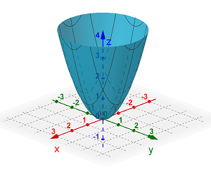
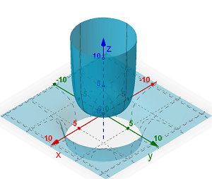
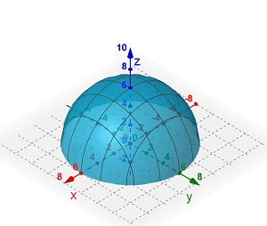
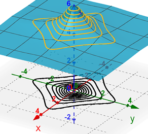
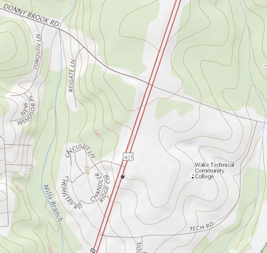

Functions of Multiple Variables
For the most part, the functions you have see and studied thus far have been of one variable. We have expressed this as \(y = f(x)\). Now we want to look at functions of multiple variables. A function of two variables would have the form \(z = f(x,y)\), meaning that the domain consists of two inputs, an \(x\) and a \(y\) value. The domain of a two variable function would be a region on the \(xy\)-plane and the function would create a surface of height \(z\) for each \((x,y)\) point in the domain. Simple examples include functions such as \(f(x,y) = x^2 + y^2\), which would be an elliptic paraboloid, or \(f(x,y) = \sin(x) \cos(y)\).
A function of three variables would have the form \(w = f(x,y,z)\). The domain of a 3-variable function would be a region of \((x,y,z)\) points in 3D space. For example, a function \(T(x,y,z)\) could give the temperature of the air in a room at each point within the room, or a function \(\delta(x,y,z)\) could give the density of an object at each point in the object.
The domain of a multi-variable function must account for all of the independent variables. Consider the following examples.
| Function & Domain | Graph | Description |
|---|---|---|
| \[f(x,y) = x^2 + y^2\] \[\{ (x,y) \, | \, x,y \in \mathbb{R} \} \] |  |
The function is an elliptic paraboloid opening up the positive z-axis. The domain is the set of all (x, y) coordinates where x and y are real numbers. In other words, the domain is the entire xy-plane. |
| \[f(x,y) = \frac{25}{25-x^2-y^2}\] \[\{(x,y) \, | \, x^2 + y^2 \ne 25\}\] |  |
The domain would be the entire xy-plane except for the circle centered at the origin with a radius of 5. |
| \[f(x,y) = \sqrt{36-x^2-y^2}\] \[\{(x,y) \, | \, x^2 + y^2 \le 36 \}\] |  |
The function is the top half of a sphere of radius 6. The domain would be the boundary and interior of the circle x2 + y2 = 36. |
Watch the following video.
A common example of two variable functions in the Cobb-Douglass production function. This is a simplifed function in economics that predicts the output production based on the amount of labor and capital invested.
Level Curves
We talked about horizontal traces in the previous unit. Recall that a trace is the curve created by the intersection of a surface with a horizontal plane. A level curve in the project of the trace onto the xy-plane. The image below shows the graph of a function \(f(x,y)\) with yellow curves that represent the traces formed by intersecting the function with the horizontal planes of \(z = 4.2, 4.4, 4.6, ..., 5.8\). The black curves on the \(xy\)-plane are the level curves.
Notice on the graph above that the level curves are closer together where the graph of \(f(x, y)\) is steeper and they are further apart as as the graph levels out (this assumes the traces are formed by equally spaced steps in the \(z\)-values, as illustrated above). Probably the most common example of level curves would be a contour map.
The map above shows the area around Wake Tech's Southern Campus. All the curving lines represents different altitudes, each 10 ft higher or lower in altitude than the adjacent curve. Curves closer together represent steeper hills. The following video will show how to determine the equation of level curves for a given function.